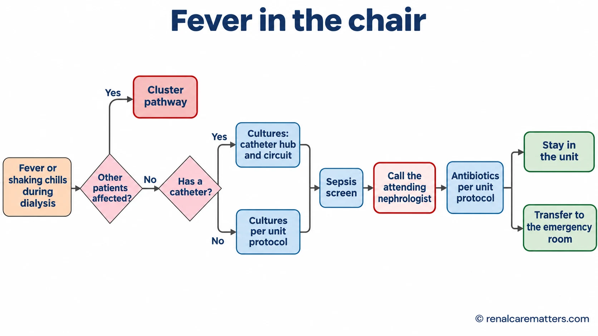
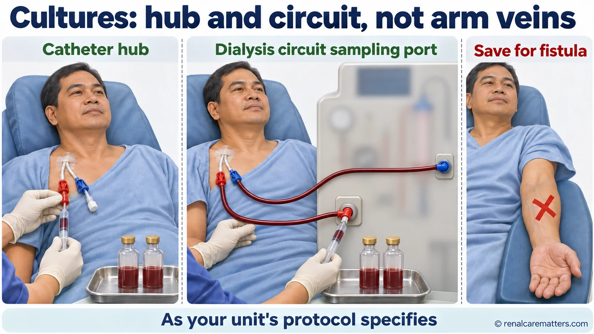
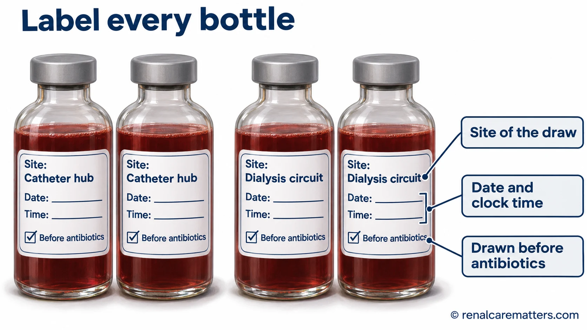
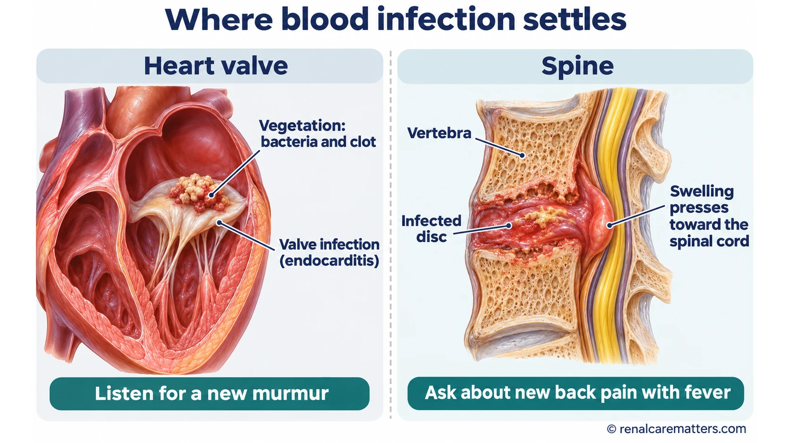
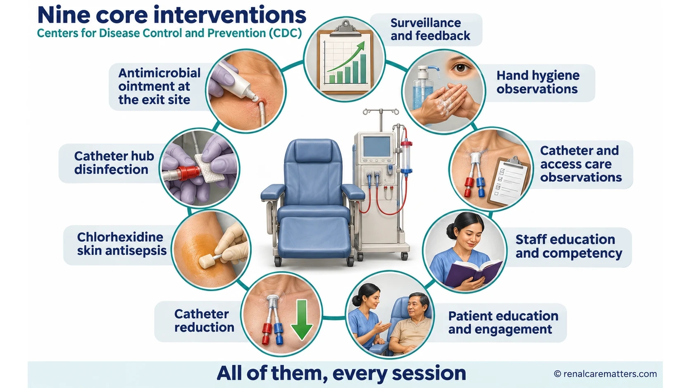

The Shivering Patient: Fever and Bloodstream Infection
Telling catheter infection from a pyrogenic reaction, drawing cultures, and recognizing sepsis in a dialysis patient.
PublishedNailathalaGipatikPepalwal:ReferencesMga SanggunianMga TinubdanReng Reperensya:22Audience: Physicians who cover hemodialysis shifts · attending nephrologists, medical directors, and head nurses who orient themRead timeOras ng pagbasaOras sa pagbasaOras ning pamamasa:
This module is study material for physicians on duty in hemodialysis units. It explains the reasoning behind common decisions; it is not a protocol. At the chairside, follow your unit’s protocol and ask the attending nephrologist for guidance. Doses and cut-off values are set by your unit. Every case is fictional.
Learning objectives
After this module you should be able to
Explain how bacteria reach the blood through a dialysis catheter, and why dialysis patients are at high risk.
Separate catheter-related bloodstream infection, access-site infection, a pyrogenic reaction, and infection elsewhere by timing and pattern.
Draw blood cultures correctly in a dialysis patient, before antibiotics and without using veins needed for future access.
Recognize sepsis and septic shock in a dialysis patient using current definitions, and state their limits in this population.
Start treatment per your unit’s protocol with the attending nephrologist, and recognize complications that need escalation: endocarditis, spine infection, and persistent bacteremia.
Pre-testBefore you read, answer the 8 self-assessment questions and note your score. After the module, select New set of questions and compare. The difference is what you learned; the questions you still miss are what to reread.
Start here
The big picture, in plain words
In plain wordsThink of a dialysis catheter as an open door from the skin to the heart. The staff unlock it with care at every session. Each time it opens, a little of the outside world can slip in.
The picture has a limit. A door lets things in only when it is open, and a catheter does not. Bacteria also creep along its outer surface from the skin, day and night. Once inside, they settle on the catheter wall in a protective layer. The patient’s defenses are weaker than normal, so a few bacteria can become a bloodstream infection within hours.
Figure 1 · Key terms for this module
BacteremiaBacteria in the blood, shown by a positive blood culture.
Catheter-related bloodstream infectionBacteremia whose source is a central venous catheter.
BiofilmA layer of bacteria and their products on a catheter surface. It shields bacteria from antibiotics and white cells.
Pyrogenic reactionChills and fever caused by bacterial fragments, such as endotoxin, entering the blood from contaminated water or fluid. Blood cultures are negative.
SepsisLife-threatening organ dysfunction caused by a dysregulated host response to infection.
Septic shockSepsis with circulatory and metabolic failure severe enough to need vasopressors and to raise the blood lactate.
RigorsViolent shaking chills.
Shivering in the chair has a short list of causes. In a patient with a catheter, the catheter is the first suspect. A few episodes are pyrogenic reactions from contaminated fluid, which may affect several patients at once. Some are infections elsewhere. Your work is to draw cultures correctly before antibiotics, recognize sepsis even when fever is absent, start treatment per your unit’s protocol with the attending nephrologist, and notice when the problem is the unit rather than the patient.
Opening case · fictional
Case: Chills thirty minutes after starting
It is Thursday, 2:30 p.m. Mrs. Rosario “Charing” Dela Cruz, 59, has diabetes and has been on dialysis for eight months. She dialyzes through a tunneled catheter in the right internal jugular vein while her new fistula matures.
Thirty minutes after connection she is shaking under two blankets. The nurse, Mr. Mark Villareal, calls you to her chair. Her temperature is 38.9 °C. Her blood pressure is 98/56 mm Hg; it was 142/80 before the session. Her pulse is 118 per minute, her respiratory rate 24 per minute, and her oxygen saturation 95%. Fluid removal is running at the ordered rate.
The exit site is slightly red, with no pus. The tunnel is not tender. She tells you she felt “feverish” last night. No other patient on the floor has chills. All values are illustrative.
Before reading on, decide:
Which of the four explanations is most likely, and what one check rules a unit-wide problem in or out?
Which cultures do you draw, from where, and before what?
Does she meet sepsis criteria, what happens in the first hour, and what happens to the session and the catheter?
Keep your answers in mind. The lesson gives you what you need, and the case review near the end shows one sound response.
Lesson · part 1
Why dialysis patients get bloodstream infections
Intact skin keeps bacteria out, and white cells kill the few that enter. A catheter patient has lost the first defense and has a weaker second.
Bacteria reach the blood by two routes. On the outside, skin bacteria creep along the catheter from the exit site, through the tunnel, toward the vein. On the inside, bacteria enter the lumen from the hub each time the catheter is opened, flushed, or connected. Module 10 covers exit-site and hub care.
Figure 2. Two routes into the blood. Bacteria travel along the outside of the catheter from the exit site, or along the inside from the hub each time it is opened. On the catheter wall they build a biofilm that shields them from antibiotics and white cells.
On the catheter wall, bacteria build a biofilm that protects them from antibiotics and white cells. They shed from it into the blood, sometimes in a burst when the catheter is flushed. This is why a catheter infection can return after antibiotics, and why the catheter itself is often part of the treatment.1
Module 4 explained that uremia impairs neutrophils and lymphocytes. Fever and the white cell count may therefore rise less than you expect. A modest temperature in a dialysis patient does not mean a modest infection.
United States surveillance gives the clearest numbers. In 2020, 4,840 dialysis facilities reported 14,822 bloodstream infections, and 34.2% were caused by Staphylococcus aureus. From 2017 to 2020, the rate of S. aureus bloodstream infection was 100 times higher in hemodialysis patients than in adults not on dialysis: 4,248 compared with 42 per 100,000 person-years. A central venous catheter was associated with an adjusted rate ratio of 6.2 compared with a fistula.2 These are observational data. Catheter patients are often sicker, and adjustment cannot remove all of that. The direction is consistent and fits the physiology.3
Link in the chain
What goes wrong
What you see at the chair
Skin and exit site
A permanent break in the skin
Redness, crusting, or pus. Often nothing
Hub
Each connection can carry bacteria into the lumen
Rigors soon after the catheter is opened and flushed
Catheter wall
Biofilm shelters bacteria
Bacteremia that returns after treatment
Host defense
Uremia weakens white cells
Little or no fever, with a large change in pressure or mentation
RememberA dialysis catheter turns a skin germ into a blood infection. Treat fever in a patient with a catheter as bacteremia until cultures say otherwise.
Lesson · part 2
Shivering in the chair: four explanations
Think of a smoke alarm in an apartment building: a fire in this apartment, on the whole floor, or smoke in the air supply. The picture has a limit: you treat the patient while you find the source.
Four explanations cover most shivering in the chair. The first is a catheter-related bloodstream infection. The second is infection of a fistula or graft, more often a graft (Module 9). The third is a pyrogenic reaction from contaminated water, dialysis fluid, or a solution. The fourth is infection elsewhere: lung, urine if the patient still passes urine, skin, a foot ulcer, the abdomen, the spine, or a heart valve.
How a pyrogenic reaction behaves
Endotoxin, from the wall of gram-negative bacteria, causes fever even when the bacteria are dead. It makes white cells release signals that raise the brain’s temperature setting, so the patient shivers. Module 6 covers water treatment.
Outbreak reports show the pattern. In one center, contaminated heparinized saline caused 23 reactions in 16 patients. Chills (75%) and fever (90%) began a mean of 1.1 and 3.6 hours into dialysis, and all blood cultures were negative.4 In another, endotoxin in tap water used for dialysis fluid caused 49 reactions in 23 of 70 patients.5 In a third, water above the standard and inadequate machine disinfection caused both pyrogenic reactions and gram-negative bacteremia.6 A prospective study in three centers counted 0.7 reactions per 1,000 treatments.7 These older reports show the pattern, not current rates; Philippine rates are unknown. The third report is the warning: contaminated fluid can cause true bacteremia, so suspecting a pyrogenic reaction is never a reason to skip cultures.
Feature
Bloodstream infection
Pyrogenic reaction
Before the session
Often unwell the night before
Well on arrival
Timing
May start soon after the catheter is opened and flushed, or at any time
During the session, as exposure continues
Other patients
Usually one patient
Often several, on the same shift, water loop, or machine type
Access
Usually a catheter
Any access, including fistulas
Blood cultures
Positive
Negative, unless the fluid also carried live bacteria
Course
Persists or worsens without antibiotics
Often settles within hours once exposure stops
These features come from the reports above and a standard dialysis text.8 None is a validated test. Use the pattern to look in the right place, and draw cultures in every case.

Figure 3. Fever in the chair. Look around the floor first, then draw cultures, screen for sepsis, call, and give antibiotics as ordered. Several patients at once is a unit problem until proven otherwise.
Decision walk-through, illustrative. Three patients on machines of the same model develop chills within the first hour. Blood cultures later return negative in two. Step 1: say aloud that this is a possible cluster, and report to the Medical Director at once. Step 2: hold the affected machines or water loop per the unit’s protocol (Module 6). Step 3: draw blood cultures from each patient before any antibiotic. Step 4: record machine numbers, dialyzer lots, and solutions used. Reading: the pattern fits a pyrogenic reaction from contaminated fluid, and the one positive culture fits the outbreak in which bad water caused both.6,4 Negative cultures do not clear the unit. They point to endotoxin rather than live bacteria.
Stop and callStop and call when two or more patients develop chills or fever on the same shift. Call the attending nephrologist and the Medical Director at once, and follow the unit’s cluster protocol (Modules 6 and 16).
RememberBefore you decide what is wrong with the patient, look around the floor. One patient is usually an infection. Several patients are the unit until proven otherwise.
Lesson · part 3
Drawing cultures the right way
A fingerprint is useful only if it is lifted before anyone touches the scene. Blood cultures work the same way. The picture has a limit: a fingerprint does not fade, but the first antibiotic dose can kill bacteria in the blood and leave the bottles sterile. That is why cultures come first.
Source
Statement
Grade, in the source’s terms
Infectious Diseases Society of America (IDSA), 2009
Obtain blood cultures before antibiotics are started
A-I
IDSA, 2009
For suspected catheter infection, draw paired samples from the catheter and a peripheral vein
A-II
IDSA, 2009, hemodialysis patients
Peripheral samples should come from vessels not intended for future use as an access
A-III
IDSA, 2009, hemodialysis patients
Samples may be drawn during dialysis from the blood lines connected to the catheter
Obtain appropriate cultures before starting empiric antibiotics for suspected catheter infection (statement 25.1)
Expert opinion
Surviving Sepsis Campaign, 2026
For adults with possible, probable, or definite sepsis, collect blood cultures as soon as possible and ideally before the first antimicrobial dose
Strong recommendation, low certainty of evidence
The IDSA grades are from 2009.1 The KDOQI algorithm draws one culture set from the catheter hub and one from the dialysis circuit, with peripheral veins optional, partly to protect veins for future fistulas.9 The 2026 sepsis guideline made blood cultures a strong recommendation of its own. Its words are “as soon as possible and ideally before” the first dose: a sequence to keep, not permission to delay the dose in a patient in shock.10
The paired-culture approach came from patients not on dialysis. Quittnat Pelletier and colleagues tested it in 178 suspected catheter infections in a Toronto dialysis unit. Cultures from the dialysis circuit were the most accurate, with a sensitivity of 93.5%, specificity of 100%, and accuracy of 95%. The guideline pair of a peripheral vein and the arterial hub was the least accurate. Only 100 of the 178 events had a peripheral culture at all, and the timing rule that compares how fast each bottle turns positive was met in fewer than one third.11 This single-center study’s reference standard included the circuit cultures it tested. Still, it supports circuit and catheter cultures over arm veins.

Figure 4. Where to draw cultures in a patient with a dialysis catheter: the catheter hub and the dialysis circuit, as your unit’s protocol specifies. Arm veins that may one day carry a fistula are protected.
Your role is to order and supervise the cultures per your unit’s protocol. The port is disinfected and dried (Module 10), sets come from the sites the protocol names, and each bottle is filled to the laboratory’s volume. Then the first dose is given and timed. Make sure nobody gives the antibiotic first because it was ready sooner.

Figure 5. A culture is only as useful as its label. Write the site and the time on every bottle, and record that it was drawn before the first antibiotic dose.
RememberCultures first, then antibiotics, and never at the cost of a vein the patient will need for a fistula.
Lesson · part 4
Recognizing sepsis in a dialysis patient
Infection is the fire. Sepsis is the fire damaging the building’s wiring, so that lights fail on floors the flames have not reached. The picture has a limit: in sepsis much of the damage comes from the body’s own response, not from the bacteria.
Normally the response to bacteria stays local. In sepsis the white cells’ signals spread through the body. Vessels widen and leak, so the pressure falls. Tissues use oxygen poorly, so lactate rises, and organs fail in turn. That chain gives the warning signs: fast breathing, confusion, low pressure, and rising lactate.
The Third International Consensus Definitions (Sepsis-3), from 2016, define sepsis as life-threatening organ dysfunction caused by a dysregulated host response to infection. Organ dysfunction is a rise of 2 points or more in the Sequential Organ Failure Assessment (SOFA) score, associated with an in-hospital mortality above 10%. Septic shock is sepsis needing a vasopressor to keep the mean arterial pressure (MAP) at 65 mm Hg or more, with a lactate above 2 mmol/L despite adequate volume, associated with hospital mortality above 40%.12 These are consensus definitions, not graded recommendations.
The same group derived the quick SOFA (qSOFA): one point each for a respiratory rate of 22 per minute or more, altered mentation, and a systolic pressure of 100 mm Hg or less. In 66,522 encounters outside the intensive care unit, a score of 2 or more carried a 3- to 14-fold higher hospital mortality.13 This retrospective study shows that qSOFA flags risk. It was not designed to rule sepsis out.
The current Surviving Sepsis Campaign guideline (2026) recommends the National Early Warning Score (NEWS or NEWS2), the Modified Early Warning Score (MEWS), or the systemic inflammatory response syndrome (SIRS) criteria over qSOFA as a single screening tool (strong recommendation, moderate certainty). It suggests measuring blood lactate in adults with possible, probable, or definite sepsis (conditional recommendation, low certainty).10 The 2026 edition says “conditional” where the 2021 edition said “weak”.14
None of these tools was derived in dialysis patients.
Red flag
Why it matters
Why it can mislead on dialysis
Low blood pressure
Widespread vessel widening and leak
Fluid removal and morning blood pressure tablets also lower it. Stop fluid removal and recheck
Fast breathing
Acidosis and lung injury
Fluid overload and the acidosis of kidney failure also raise it
Altered mentation
Poor brain perfusion and inflammation
Uremia, low blood sugar, and sedating medicines also cause it. Compare with the usual state
Raised lactate
Tissues short of oxygen, or stress
Not every unit can measure it. Liver disease and some medicines raise it too
SOFA rise of 2 or more
Organ dysfunction
The kidney component is already at its maximum
Worked example A, illustrative: qSOFA. Charing: respiratory rate 24 per minute (22 or more: 1 point). Mentation normal (0). Systolic pressure 98 mm Hg (100 or less: 1 point). qSOFA = 1 + 0 + 1 = 2.13 What it tells you: higher risk; evaluate her now. What it does not: a score of 0 or 1 would not exclude sepsis, and qSOFA should not be the only screen.10 The qSOFA and SOFA calculator linked below checks a score.
Worked example B, illustrative: shock index and mean arterial pressure. Shock index = heart rate ÷ systolic pressure = 118 ÷ 98 = 1.20. MAP = diastolic + (systolic − diastolic) ÷ 3 = 56 + (98 − 56) ÷ 3 = 56 + 14 = 70 mm Hg. Both are standard bedside arithmetic.15 What they tell you: her heart is racing to hold a fallen pressure. What they do not: the shock index is not validated in dialysis patients, and part of the fall may be fluid removal. Stop it per protocol and recalculate.
Worked example C, decision walk-through: SOFA on dialysis. SOFA scores breathing, clotting (platelets), liver (bilirubin), circulation (MAP and vasopressors), brain (Glasgow Coma Scale), and kidney.12 On maintenance dialysis the kidney component already scores its maximum, so it cannot rise. A change of 2 or more must come from the other five. Example: platelets fall from baseline into a higher band (+1), and a new vasopressor need raises the circulation score (+2 or more). Change from baseline = 3 or more. Lesson: count the change from baseline in the non-kidney organs. This adaptation is a teaching aid, not a validated score.
At the chair, stop fluid removal if the pressure is low (Module 13), assess mentation, breathing, and perfusion, ask for a lactate if available, and call.
Stop and callStop and call the attending nephrologist at once when fever or rigors come with low pressure, altered mentation, fast breathing, or a raised lactate. Prepare for transfer while you call.
RememberSepsis is organ failure, not fever. In a dialysis patient, judge it by the change from the patient’s own baseline.
Lesson · part 5
Starting treatment: antibiotics, the session, and the catheter
A fire crew calls for backup, fights the fire, and finds the source, all at once. Here the call is to the attending nephrologist, the fight is the first antibiotic dose, and the source is usually the catheter. The picture has a limit: the antibiotic, the fluid, and the catheter plan are the nephrologist’s decisions, made with you.
Each hour without an effective antibiotic lets bacteria multiply and organ injury run further. The 2026 guideline grades statements as strong (“recommend”) or conditional (“suggest”), with certainty from high to very low.
Surviving Sepsis Campaign statement
Strength and certainty, in the guideline’s terms
For possible, probable, or definite septic shock, and for probable or definite sepsis, give antimicrobials immediately, ideally within 1 hour of recognition (2026)
Strong, very low certainty
For possible sepsis without shock, rapid investigation, with antimicrobials within 3 hours if concern for infection persists (2026)
Conditional, very low certainty
At high risk of a specific multidrug-resistant bacterium, empiric therapy that covers it (2026). In a catheter infection the usual example is methicillin-resistant S. aureus (MRSA)
Conditional, very low certainty
Early source control, ideally within 6 hours, when a specific source needs it (2026)
Conditional, very low certainty
Prompt removal of intravascular access devices that are a possible source of sepsis, after other vascular access has been established (2021)
Best practice statement, 2021 edition
At least 30 mL/kg of intravenous crystalloid in the first 3 hours for sepsis-induced hypoperfusion or shock (2026)
Conditional, low certainty
Balanced crystalloids rather than 0.9% saline (2026)
Conditional, moderate certainty
Norepinephrine as the first-line vasopressor (2026)
Strong. High certainty against dopamine, low against epinephrine
An initial MAP target of 65 mm Hg in septic shock (2026). For adults aged 65 or older, an initial target of 60 to 65 mm Hg is suggested
Strong, moderate certainty. Age 65 or older: conditional, low certainty
The 2026 statements are from the current guideline.10 The device-removal statement is from the 2021 edition; the 2026 summary we checked did not list it, so it carries its year.14 Much of this rests on low or very low certainty.
Fluids: a tension to name
Module 2 explained that fluid given to an anuric patient stays in the body until dialysis removes it. The fluid suggestion is written for adults in general and does not address anuric dialysis patients. The volume for a septic dialysis patient is therefore the attending nephrologist’s or the emergency physician’s decision. Give what your unit’s protocol allows while you call, and record every portion.
The catheter
IDSA 2009 statement for hemodialysis catheter infection
Grade
Empiric therapy should include vancomycin and coverage for gram-negative bacilli, based on the local susceptibility pattern
A-II
Switch to cefazolin for methicillin-susceptible S. aureus
A-II
Remove the catheter for S. aureus, Pseudomonas species, or Candida species, with a temporary catheter at another site
A-II
If no other site is available, exchange the catheter over a guidewire
B-II
For other bacteria, treatment may begin without immediate removal, with an antibiotic lock as an adjunct. Remove the catheter if symptoms persist or metastatic infection appears
B-II
Treat for 4 to 6 weeks when bacteremia persists, or with endocarditis or infected clot in the vein
B-II
Obtain surveillance cultures 1 week after the course ends
B-III
No newer IDSA guideline specific to hemodialysis was found.1 The 2019 KDOQI guideline frames catheter management as individualized: guidewire exchange, removal and reinsertion, salvage, or an antibiotic lock, chosen for the patient’s health and access situation (statement 25.2, expert opinion).9 Doses belong to your unit’s protocol and Module 20.
The attending nephrologist decides whether the session continues; the call card below covers stopping and returning the blood.
RememberCultures, call, antibiotic, source: in that order, and within the hour if the patient looks septic.
Lesson · part 6
Where infection hides: valves and spine
Bacteria in the blood are like seeds on the wind. The picture has a limit: they do not land at random. They stick where flow is turbulent, such as a damaged heart valve, or where bone has a rich blood supply, such as the spine.
A valve damaged by calcium, age, or earlier disease has a rough surface. Platelets and fibrin collect there, and bacteria stick to this mesh and grow into a vegetation. In the spine, bacteria lodge in small vessels beside a disc, then spread into the disc and the vertebrae. Pus can press toward the spinal cord. Both can follow a single bacteremia, and both are easy to miss.

Figure 6. Where blood infection settles. A new murmur may mean a valve infection, called endocarditis. New back pain with fever may mean a spine infection. Ask and examine at every febrile session.
An international registry included 6,691 patients with infective endocarditis, 553 (8.3%) of them on hemodialysis. In the dialysis patients, S. aureus caused 47.8% and enterococci 15.4%. Compared with other patients, in-hospital mortality was 30.4% versus 17%, six-month mortality 39.8% versus 20.7%, and relapse 9.4% versus 2.7%.16 The registry was observational. In a matched study of 35 dialysis patients with endocarditis and 70 with bacteremia alone, earlier valve disease (odds ratio 29.7) and longer earlier catheter use (150 versus 28.5 days) were associated with endocarditis. Thirty-day mortality was 37.1% versus 17.1%.17 The study was small, so the odds ratio is imprecise. In S. aureus bacteremia generally, a review of 9 studies with 4,050 patients found endocarditis in 14% to 28% with transesophageal echocardiography, compared with 2% to 15% with transthoracic.18
A systematic review collected 212 dialysis patients with spine infection. S. aureus was the commonest cause. The time from back pain to diagnosis ranged from 3 days to 6 months, and about one quarter developed neurologic deficits.19 One center reported 8 spine or paraspinal infections among 162 patients when catheter bacteremia was treated with antibiotics alone, and none in 15 months after it adopted routine catheter exchange.20 That small uncontrolled series suggests, but does not prove, that leaving an infected catheter in place raises the risk.
Red flag
What it may mean
What you do
Fever or positive cultures that persist on treatment
An infected catheter left in place, a vegetation, or an abscess
Report the same day. Ask about the catheter plan
A new murmur, or new heart failure
Valve infection
Listen at every febrile session. Report at once
Painful spots on fingers or toes, a new stroke, or sudden limb pain
Fragments of a vegetation lodging downstream
Call at once. Prepare transfer
New back or neck pain with fever or recent bacteremia
Disc or vertebral infection
Examine the spine and legs. Report the earlier bacteremia
Leg weakness, numbness, or new bladder or bowel trouble
Pressure on the spinal cord
Emergency. Call and transfer at once
A second bacteremia with the same bacterium
Relapse from a hidden source
Report it as a relapse
Stop and callStop and call the attending nephrologist when a febrile or recently bacteremic patient has new back or neck pain, a new murmur, or any new weakness, numbness, or bladder change. A new neurologic deficit is an emergency; arrange transfer while you call.
RememberAsk every febrile dialysis patient about back pain, and listen for a new murmur.
Lesson · part 7
Preventing the next one, and the call card
Bloodstream infections are prevented by routines, not heroics. The picture has a limit: a routine protects only when everyone does it.
The Centers for Disease Control and Prevention (CDC) lists nine core interventions: surveillance and feedback, hand hygiene observations, catheter and access care observations, staff education and competency, patient education and engagement, catheter reduction, chlorhexidine skin antisepsis, catheter hub disinfection, and antimicrobial ointment at the exit site.21,3 In 17 United States facilities that adopted such a package, modeled bloodstream infection rates fell by 32% and access-related rates by 54%.22 There was no control group, so part of the fall may reflect other changes. The result supports the package but does not show which part mattered most.

Figure 7. Nine routines that prevent bloodstream infection in dialysis units. Each is simple; the effect comes from doing all of them every session.
Modules 10 and 29 cover the details. Ask for the exit plan for every catheter. Report every bloodstream infection for surveillance. Clean your hands at every chair, because staff copy the doctor. Note in the record which arm is reserved for a fistula.
Worked example E, illustrative: a unit’s bloodstream infection rate. Rate per 100 patient-months = events ÷ patient-months × 100, the unit used in the collaborative report.22 A unit has 60 patients for 3 months: 60 × 3 = 180 patient-months, with 4 bloodstream infections. Rate = 4 ÷ 180 × 100 = 2.2 per 100 patient-months. It gives a number to track. With few events, one extra infection moves it a great deal, so compare quarters, not months. The access infection rate calculator linked below adds a confidence interval.
Be exact about the blood. In an isolated infection the circuit is sound. When water, fluid, or a solution may be the cause, the circuit may carry the problem.
Figure 8 · Call card: fever or rigors in the chair
RecognizeShivering, rigors, a temperature at or above your unit’s threshold, or new low pressure with warm or mottled skin. Fever may be absent.
First 2 minutesCheck airway, breathing, pressure, and mentation. Stop fluid removal if the pressure is low. Look around the floor for other patients with chills. Inspect the exit site and the access.
Stop dialysis?If unstable, stop per your unit’s protocol and prepare transfer. If stable, the attending nephrologist decides whether to continue, which allows circuit cultures and the first antibiotic dose, or to end early. If a cluster or contaminated fluid is suspected, follow the cluster pathway (Modules 6 and 16).
Return the blood?Yes, per protocol, in an isolated infection with a sound circuit. Do NOT return the blood if hemolysis is possible, if there is air in the venous line, if a severe dialyzer reaction is suspected, or if the circuit has clotted. In a suspected cluster or contaminated fluid, clamp the lines and ask the attending nephrologist before any blood is returned.
CallThe attending nephrologist at once. The Medical Director for any cluster. The emergency room or transport for septic shock, altered mentation, or failing oxygenation. Use the Situation, Background, Assessment, Recommendation (SBAR) format (situation, background, assessment, recommendation) from Module 1.
WriteOnset time and pattern. Vital signs over time. Other patients checked. Exit site and access findings. Culture sites and times. Antibiotic name and time, with the dose as ordered. Lactate if done. Who you called, when, and what was decided. Machine number and dialyzer lot if a cluster is suspected. Where the patient went.
On the floor
Real situations: problems and solutions
These are fictional but typical. For each one, cover the answer, decide what you would do, then compare. Where a step depends on local rules, your unit’s procedure and your supervisor’s direction come first.
Three chills in one hour
What you see
On the morning shift, three patients on machines of the same model begin shivering within the first hour. Two have fistulas and one has a catheter. None felt unwell on arrival.
What is likely going on
Several patients with the same symptom at the same time point to a shared cause: contaminated water, dialysis fluid, or a solution used on the floor. A pyrogenic reaction is more likely than three separate infections.
What to do
Say aloud that this is a possible cluster. Follow the unit’s cluster protocol, hold new starts on the affected machines, and do not return blood until the attending nephrologist advises. Draw blood cultures from each patient, call the attending nephrologist, and inform the Medical Director at once.
Why it matters
A cluster is a unit problem. Treating each patient alone leaves the source in place for the next shift.
Rigors at the moment of connection
What you see
A man with a tunneled catheter starts shaking within minutes of the catheter being flushed and connected. He was well on arrival. His exit site looks clean.
What is likely going on
Rigors soon after a catheter is opened and flushed raise suspicion that bacteria in the catheter lumen were pushed into the blood. A clean exit site does not exclude infection inside the catheter.
What to do
Check his pressure, breathing, and mentation. Have cultures drawn from the catheter hub and the circuit, per protocol, before any antibiotic. Call the attending nephrologist and confirm the antibiotic order.
Why it matters
The timing is a clue, not a test. The cultures and the attending nephrologist’s plan decide the rest.
No fever, but something is wrong
What you see
An elderly woman with diabetes and a catheter is quieter than usual. Her temperature is normal. Her pressure is lower than her usual pre-dialysis reading, and her breathing is fast.
What is likely going on
Fever may be blunted in kidney failure and in older patients. Low pressure, fast breathing, and a change in mentation can be the first signs of sepsis.
What to do
Stop fluid removal if the pressure is low, per protocol. Screen for sepsis and draw cultures. Call the attending nephrologist and describe the change from her baseline, not only the temperature.
Why it matters
Waiting for a fever before acting loses time in the patients who are least able to mount one.
Back pain after last month’s bacteremia
What you see
A man treated for a Staphylococcus aureus catheter infection four weeks ago now has new low back pain. He has a low-grade fever today.
What is likely going on
Bacteria that reached the blood may have settled in a disc or vertebra. Spine infection is easy to miss because back pain is common.
What to do
Examine his back, legs, and bladder function, and ask about weakness or numbness. Call the attending nephrologist the same day and report the earlier bacteremia. Any new weakness or numbness is an emergency.
Why it matters
A delayed diagnosis can leave permanent weakness. The earlier bacteremia is the key to the story.
Pus at the exit site
What you see
A woman’s catheter exit site is red, and pus appears when the dressing is removed. She has no fever and her pressure is normal.
What is likely going on
This is an exit-site infection, and the pus is a sign that the catheter may need to come out. Module 10 covers local catheter care.
What to do
Have the pus swabbed and blood cultures drawn per protocol. Call the attending nephrologist before the session starts. Do not decide alone whether to use the catheter today.
Why it matters
A catheter with pus at its exit is a door that is already open. The plan for the catheter belongs to the nephrologist.
Field notes
When a patient shivers, look around the floor before you look at the chart.
Write the clock time on every culture bottle and on the first antibiotic dose. The gap between them is a quality measure.
Ask every febrile dialysis patient about back pain and listen for a new murmur.
Treat each arm vein as a future fistula. Draw from the catheter and the circuit unless the protocol says otherwise.
At handover, name every patient on antibiotics for a bloodstream infection and the date their cultures were drawn.
Case review
Back to the case: Chills thirty minutes after starting
Which explanation, and what one check? A catheter-related bloodstream infection is most likely. Charing has a tunneled catheter, a slightly red exit site, and rigors within half an hour of connection. She felt feverish the night before, so the illness began before today’s fluid exposure. The one check is a look around the floor. Mr. Villareal confirms that no other patient has chills, so a pyrogenic cluster is unlikely. You still examine her chest and feet.
Which cultures, from where, and before what? Two culture sets, one from the catheter hub and one from the dialysis circuit, as your unit’s protocol specifies. No arm vein is used, because her arms are reserved for access. Both sets are drawn before the first antibiotic dose, filled to the laboratory’s volume, and labeled with site and clock time.
Sepsis, the first hour, the session, and the catheter. She has suspected infection with a qSOFA of 2, a systolic fall of 44 mm Hg from baseline, and a shock index of 1.20. She needs urgent evaluation as possible sepsis. You stop fluid removal, recheck the pressure, ask for a lactate per protocol, and call the attending nephrologist with an SBAR report. Within the hour, after the cultures, the first antibiotic dose is given as the nephrologist orders under the unit’s protocol. Her pressure rises to 112/64 mm Hg once fluid removal stops. The nephrologist ends the session early. The blood is returned because the circuit is sound, and she goes to the emergency room for admission. If the cultures grow S. aureus, the guideline advises removing the catheter. That decision, and the plan for her maturing fistula, belong to the nephrologist.
Interactive case · fictional
Interactive case: Rigors in hour one
Work through a shift one decision at a time. The panel at the top changes with what you choose. After each choice you see why it is, or is not, the best move; after a weaker one you can try again or carry on and see where it leads. Your first choice at each step is scored. The score stays on this device and nothing is sent anywhere. In real practice, your unit’s protocol and the people responsible for each decision come first.
🚨 Emergency quick card:Fever, rigors, sepsis. One screen each, saved for use with no signal. Print a copy for the crash cart.
Skills lab · with your preceptor
Skills checklist: Blood cultures from the circuit and catheter, and the first-hour sepsis response
Perform this response on a training arm and circuit, or with a simulated patient, while your preceptor observes and plays the nurse. Your preceptor rates each step as satisfactory, needs practice, or not observed. Steps marked Critical must all be satisfactory before sign-off. This checklist supports supervised learning; your unit’s own procedure and competency form are the authority. A printable version of every checklist is on the trainer page.
CriticalRecognizes fever or rigors and checks at once whether other patients on the floor are affected.
Stops fluid removal if the pressure is low, per the unit’s protocol, and reassesses (Module 13).
Performs hand hygiene and wears gloves and a mask per protocol.
CriticalDisinfects the catheter hub or the blood line sampling port per protocol and lets it dry.
CriticalDraws cultures from the circuit or catheter as the unit’s protocol specifies, before any antibiotic.
CriticalDoes not use a vein the patient may need for a future access.
Fills the bottles to the laboratory’s required volume and labels each with site and time.
Screens for sepsis using mentation, breathing, pressure, perfusion, and lactate per protocol, and examines the exit site, the tunnel, the heart for a murmur, and the back.
CriticalCalls the attending nephrologist with an SBAR report and confirms the antibiotic order.
Gives or confirms the first antibiotic dose as ordered, and records the time.
CriticalStates when the blood is returned and when it must not be.
Decides with the attending nephrologist whether to continue, stop, or transfer, and documents culture times, antibiotic time, vital signs, and the plan.
Placement activity. For one month, keep a log of every patient with fever or chills on your shifts: access type, onset time, culture sites and times, antibiotic time, and the final culture result. Review the log with your preceptor, and calculate the gap between recognition and the first antibiotic dose for each case.
Self-assessment
Check your understanding
Each visit draws 8 questions at random from this module’s 15-question bank. Choose the single best answer for each, then select Check answers; an explanation appears under the best answer. Select New set of questions for a different mix. A good target is 7 of 8 on two different sets. Nothing you select is sent anywhere; scoring happens in your browser.
Mermel, L. A., Allon, M., Bouza, E., Craven, D. E., Flynn, P., O’Grady, N. P., Raad, I. I., Rijnders, B. J. A., Sherertz, R. J., & Warren, D. K. (2009). Clinical practice guidelines for the diagnosis and management of intravascular catheter-related infection: 2009 update by the Infectious Diseases Society of America. Clinical Infectious Diseases, 49(1), 1–45. https://doi.org/10.1086/599376
Rha, B., See, I., Dunham, L., Kutty, P. K., Moccia, L., Apata, I. W., Ahern, J., Jung, S., Li, R., Nadle, J., Petit, S., Ray, S. M., Harrison, L. H., Bernu, C., Lynfield, R., Dumyati, G., Tracy, M., Schaffner, W., Ham, D. C., . . . Novosad, S. (2023). Vital signs: Health disparities in hemodialysis-associated Staphylococcus aureus bloodstream infections, United States, 2017–2020. MMWR. Morbidity and Mortality Weekly Report, 72(6), 153–159. https://doi.org/10.15585/mmwr.mm7206e1
Kantor, R. J., Carson, L. A., Graham, D. R., Petersen, N. J., & Favero, M. S. (1983). Outbreak of pyrogenic reactions at a dialysis center: Association with infusion of heparinized saline solution. The American Journal of Medicine, 74(3), 449–456. https://doi.org/10.1016/0002-9343(83)90978-6
Hindman, S. H., Favero, M. S., Carson, L. A., Petersen, N. J., Schonberger, L. B., & Solano, J. T. (1975). Pyrogenic reactions during haemodialysis caused by extramural endotoxin. The Lancet, 2(7938), 732–734. https://doi.org/10.1016/s0140-6736(75)90721-7
Jackson, B. M., Beck-Sague, C. M., Bland, L. A., Arduino, M. J., Meyer, L., & Jarvis, W. R. (1994). Outbreak of pyrogenic reactions and gram-negative bacteremia in a hemodialysis center. American Journal of Nephrology, 14(2), 85–89. https://doi.org/10.1159/000168694
Gordon, S. M., Oettinger, C. W., Bland, L. A., Oliver, J. C., Arduino, M. J., Aguero, S. M., McAllister, S. K., Favero, M. S., & Jarvis, W. R. (1992). Pyrogenic reactions in patients receiving conventional, high-efficiency, or high-flux hemodialysis treatments with bicarbonate dialysate containing high concentrations of bacteria and endotoxin. Journal of the American Society of Nephrology, 2(9), 1436–1444. https://doi.org/10.1681/ASN.V291436
Daugirdas, J. T., Blake, P. G., & Ing, T. S. (Eds.). (2015). Handbook of dialysis (5th ed.). Wolters Kluwer.
Lok, C. E., Huber, T. S., Lee, T., Shenoy, S., Yevzlin, A. S., Abreo, K., Allon, M., Asif, A., Astor, B. C., Glickman, M. H., Graham, J., Moist, L. M., Rajan, D. K., Roberts, C., Vachharajani, T. J., & Valentini, R. P. (2020). KDOQI clinical practice guideline for vascular access: 2019 update. American Journal of Kidney Diseases, 75(4, Suppl. 2), S1–S164. https://doi.org/10.1053/j.ajkd.2019.12.001
Prescott, H. C., Antonelli, M., Alhazzani, W., Møller, M. H., Alshamsi, F., Azevedo, L. C. P., Belley-Cote, E., De Waele, J., Derde, L., Dionne, J. C., Evans, L., Gershengorn, H. B., Hodgson, C. L., Honarmand, K., Kesecioglu, J., McIntyre, L., Mer, M., Nunnally, M. E., Oczkowski, S. J. W., . . . Coopersmith, C. M. (2026). Surviving Sepsis Campaign: International guidelines for management of sepsis and septic shock 2026. Critical Care Medicine, 54(4), 725–812. https://doi.org/10.1097/CCM.0000000000007075
Quittnat Pelletier, F., Joarder, M., Poutanen, S. M., & Lok, C. E. (2016). Evaluating approaches for the diagnosis of hemodialysis catheter-related bloodstream infections. Clinical Journal of the American Society of Nephrology, 11(5), 847–854. https://doi.org/10.2215/CJN.09110815
Singer, M., Deutschman, C. S., Seymour, C. W., Shankar-Hari, M., Annane, D., Bauer, M., Bellomo, R., Bernard, G. R., Chiche, J.-D., Coopersmith, C. M., Hotchkiss, R. S., Levy, M. M., Marshall, J. C., Martin, G. S., Opal, S. M., Rubenfeld, G. D., van der Poll, T., Vincent, J.-L., & Angus, D. C. (2016). The Third International Consensus Definitions for Sepsis and Septic Shock (Sepsis-3). JAMA, 315(8), 801–810. https://doi.org/10.1001/jama.2016.0287
Seymour, C. W., Liu, V. X., Iwashyna, T. J., Brunkhorst, F. M., Rea, T. D., Scherag, A., Rubenfeld, G., Kahn, J. M., Shankar-Hari, M., Singer, M., Deutschman, C. S., Escobar, G. J., & Angus, D. C. (2016). Assessment of clinical criteria for sepsis: For the Third International Consensus Definitions for Sepsis and Septic Shock (Sepsis-3). JAMA, 315(8), 762–774. https://doi.org/10.1001/jama.2016.0288
Evans, L., Rhodes, A., Alhazzani, W., Antonelli, M., Coopersmith, C. M., French, C., Machado, F. R., Mcintyre, L., Ostermann, M., Prescott, H. C., Schorr, C., Simpson, S., Wiersinga, W. J., Alshamsi, F., Angus, D. C., Arabi, Y., Azevedo, L., Beale, R., Beilman, G., . . . Levy, M. (2021). Surviving sepsis campaign: International guidelines for management of sepsis and septic shock 2021. Intensive Care Medicine, 47(11), 1181–1247. https://doi.org/10.1007/s00134-021-06506-y
Hall, J. E., & Hall, M. E. (2021). Guyton and Hall textbook of medical physiology (14th ed.). Elsevier.
Pericàs, J. M., Llopis, J., Jiménez-Exposito, M. J., Kourany, W. M., Almirante, B., Carosi, G., Durante-Mangoni, E., Fortes, C. Q., Giannitsioti, E., Lerakis, S., Montagna-Mella, R., Ambrosioni, J., Tan, R.-S., Mestres, C. A., Wray, D., Pachirat, O., Moreno, A., Chu, V. H., de Lazzari, E., . . . Miró, J. M. (2021). Infective endocarditis in patients on chronic hemodialysis. Journal of the American College of Cardiology, 77(13), 1629–1640. https://doi.org/10.1016/j.jacc.2021.02.014
Al-Chalabi, S., Tay, T., Chinnadurai, R., & Kalra, P. A. (2023). Risk factors for infective endocarditis in patients receiving hemodialysis: A propensity score matched cohort study. Clinical Nephrology, 100(2), 51–59. https://doi.org/10.5414/CN111117
Holland, T. L., Arnold, C., & Fowler, V. G., Jr. (2014). Clinical management of Staphylococcus aureus bacteremia: A review. JAMA, 312(13), 1330–1341. https://doi.org/10.1001/jama.2014.9743
Madhavan, K., Chieng, L. O., Armstrong, V. L., & Wang, M. Y. (2019). Spondylodiscitis in end-stage renal disease: A systematic review. Journal of Neurosurgery: Spine, 30(5), 674–682. https://doi.org/10.3171/2018.9.SPINE18824
Philipneri, M., Al-Aly, Z., Amin, K., Gellens, M. E., & Bastani, B. (2003). Routine replacement of tunneled, cuffed, hemodialysis catheters eliminates paraspinal/vertebral infections in patients with catheter-associated bacteremia. American Journal of Nephrology, 23(4), 202–207. https://doi.org/10.1159/000071479
Patel, P. R., Yi, S. H., Booth, S., Bren, V., Downham, G., Hess, S., Kelley, K., Lincoln, M., Morrissette, K., Lindberg, C., Jernigan, J. A., & Kallen, A. J. (2013). Bloodstream infection rates in outpatient hemodialysis facilities participating in a collaborative prevention effort: A quality improvement report. American Journal of Kidney Diseases, 62(2), 322–330. https://doi.org/10.1053/j.ajkd.2013.03.011
Educational study material for physicians. Does not replace the attending nephrologist’s orders, the unit’s protocols, required certification courses, or supervised practice.